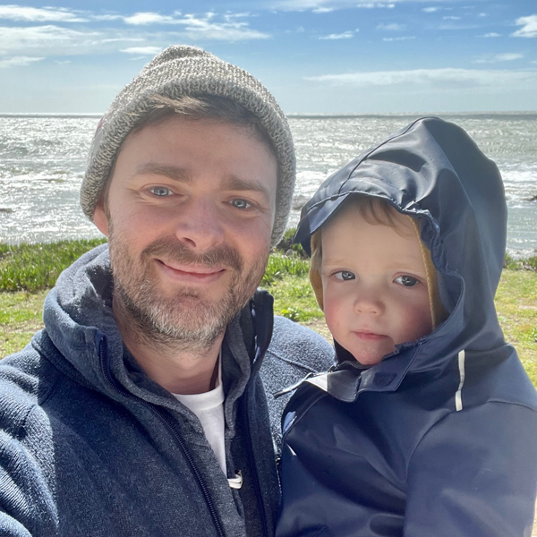

About
Supply & design since 2023. Atterbury is a small, but mighty studio, sign foundry, and goods shop created by accidental-entrepreneur and Sasquatch believer, Roger Flanagan. We make original signs and prints for people like you. Handmade in Northern Kentucky.
You’re here because you have a vision, a big idea. Our purpose is to help our customers connect in a meaningful and memorable way with their purchase; whether it's concepting invitations for your 10-year-olds birthday party or creating an epic comemorative poster for Nana's banana bread recipe. We use our unique style and Swiss-army-skillset to craft handmade quality goods big and small.

About Roger Flanagan
Greetings from the Bluegrass state. Besides designing, sign builds, and business as usual, he's fond of snapping pics on his Contax G2, pretending to make websites in VS Code, chuckling along to Earwolf podcasts, and prowling the local swap meets looking for vintage wall art. Dad in real life.